Матрица и экспозиция
Ф04 · размер · Байер · ISO · треугольник
Фотографическая матрица
Прибор, преобразующий световой поток в электрический сигнал.
Система в виде аналоговой или цифро-аналоговой интегральной микросхемы, состоящей из светочувствительных элементов — фотодиодов.
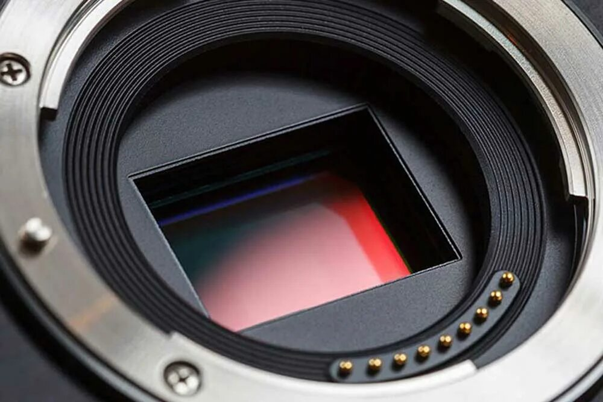
Пять операций сенсора
- поглотить фотоны
- превратить в заряд
- накопить
- превратить в напряжение
- передать дальше
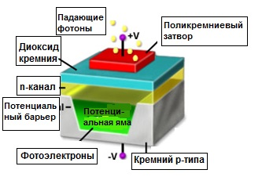
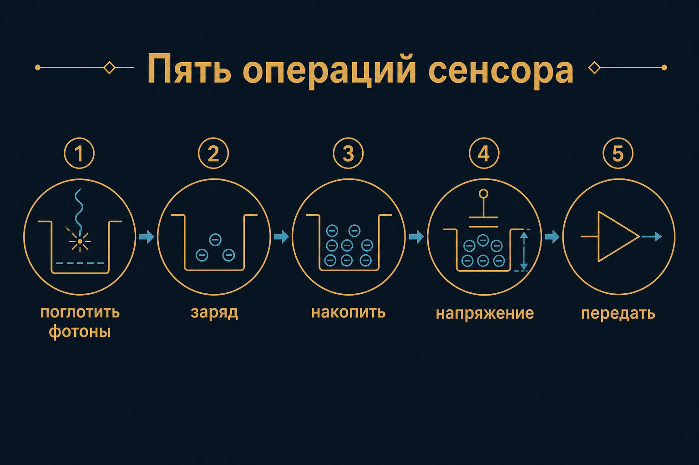
Устройство одного пикселя матрицы
Пример субпикселя ПЗС-матрицы с карманом n-типа. Схема — на примере красного фотодетектора.
- фотоны света, прошедшие через объектив фотоаппарата;
- микролинза субпикселя;
- R — красный светофильтр субпикселя, фрагмент фильтра Байера;
- прозрачный электрод из поликристаллического кремния или сплава индия и оксида олова;
- оксид кремния;
- кремниевый канал n-типа: зона генерации носителей — зона внутреннего фотоэффекта;
- зона потенциальной ямы (карман n-типа), где собираются электроны из зоны генерации носителей заряда;
- кремниевая подложка p-типа.
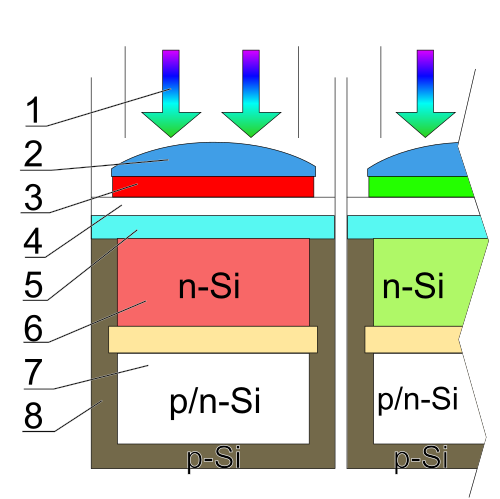
Характеристики матрицы
- физический размер
- разрешение
- отношение сигнал/шум
- эквивалент ISO
- динамический диапазон
- технология изготовления (ПЗС, КМОП и др.)
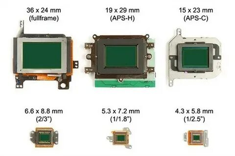
ПЗС-матрица
ПЗС-матрица (CCD, Charge Coupled Device — прибор с зарядовой связью) состоит из светочувствительных фотодиодов, выполнена на основе кремния и использует технологию приборов с зарядовой связью: накопленный заряд переносится к общему узлу считывания.
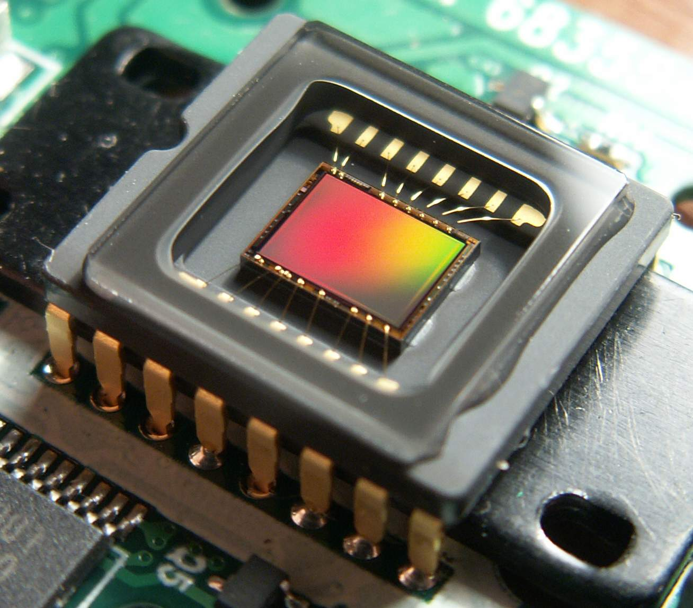
КМОП-матрица
КМОП-матрица (CMOS, Complementary Metal Oxide Semiconductor — комплементарная структура металл–оксид–полупроводник) выполнена по КМОП-технологии. Каждый пиксель снабжён усилителем считывания; выборка сигнала с выбранного пикселя выполняется произвольно, как в микросхемах памяти.
- светочувствительный элемент (фотодиод);
- затвор;
- конденсатор, сохраняющий заряд с диода;
- усилитель;
- шина выбора строки;
- вертикальная шина, передающая сигнал процессору;
- сигнал сброса.
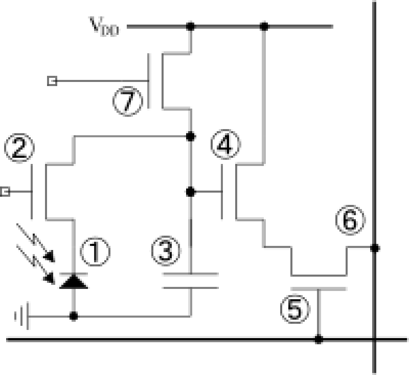
КМОП: преимущества и недостатки
Преимущества
- низкое энергопотребление в статическом состоянии;
- единство технологии с остальными цифровыми элементами аппаратуры (миниатюризация и снижение стоимости);
- считывание выбранных групп пикселей;
- возможность повышать чувствительность при слабом освещении и изменять балансировку белого;
- меньшая стоимость производства по сравнению с ПЗС-матрицами.
Недостатки
- у каждого пикселя своя характеристическая кривая — разброс светочувствительности и коэффициента контраста;
- большой объём электронных элементов относительно площади фотодиода создаёт нагрев при считывании и увеличивает тепловой шум.
ПЗС и КМОП: сравнение
| ПЗС | КМОП | |
|---|---|---|
| Считывание | перенос заряда к общему выходу | усиление в пикселе, произвольная выборка |
| Энергопотребление | выше | ниже в статике |
| Шум / однородность | обычно выше однородность | разброс характеристик пикселей |
| Производство | дороже | дешевле, совмещается с цифровой логикой |
| Применение сейчас | специализированные системы | большинство фото- и видеокамер |
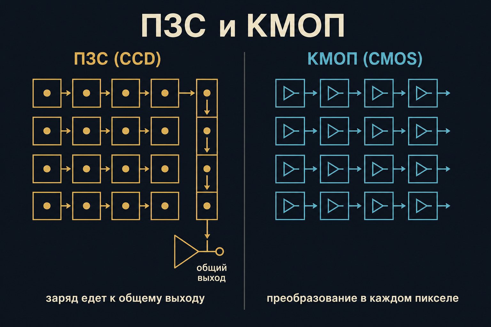
Формирование цветного изображения
Сам сенсель (пиксель) фиксирует только яркость (светлоту) в одном широком спектральном диапазоне и не различает цвета. Конкретные цвета получают, как правило, с помощью светофильтров и линз, пропускающих излучение в заданном диапазоне спектра.
Чувствительность матрицы — квантовая эффективность и порог, при котором фототок превышает темновой ток.
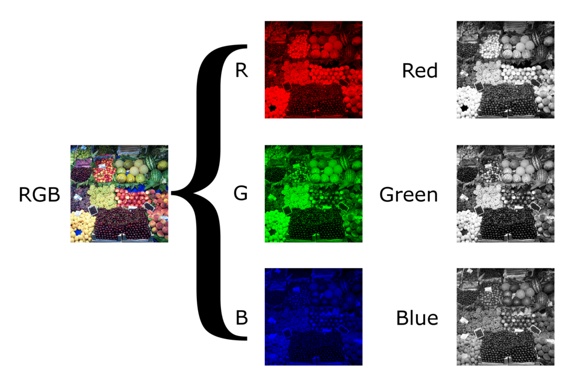
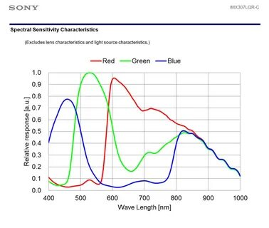
Панхроматическое изображение
Чёрно-белое изображение, полученное с использованием одного спектрального канала, охватывающего весь видимый диапазон электромагнитного спектра (примерно 450–900 нм). Информация о цвете отсутствует; изображение представлено в оттенках серого.
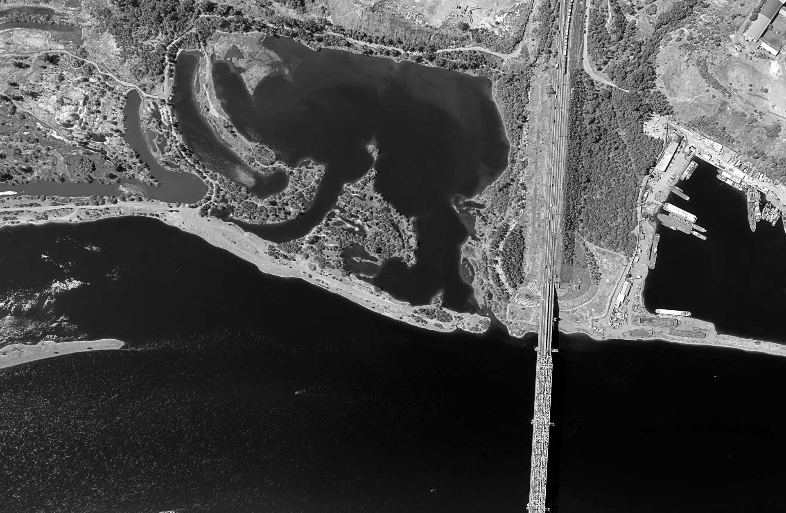
Варианты получения цвета
- фильтр Байера;
- многокамерные системы (в аэрофотосъёмке);
- трёхматричные системы (3CCD);
- Foveon;
- Pixel Shift (сдвиг матрицы).
3CCD и Foveon
3CCD
Световой поток разделяется призмой на три спектральные составляющие; каждая регистрируется отдельной матрицей. На каждый пиксель изображения приходится полное измерение трёх каналов без мозаичной интерполяции.
Foveon
Трёхслойный сенсор: фотоны разных длин волн поглощаются на разной глубине кремния. Цветовые каналы формируются в одном столбце пикселей без цветной мозаики на поверхности.
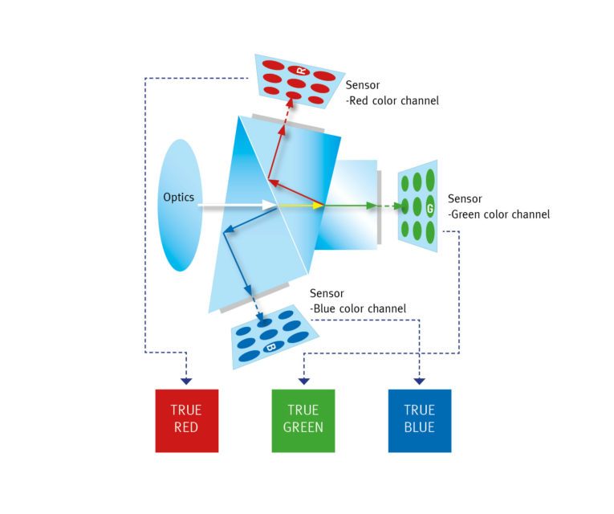
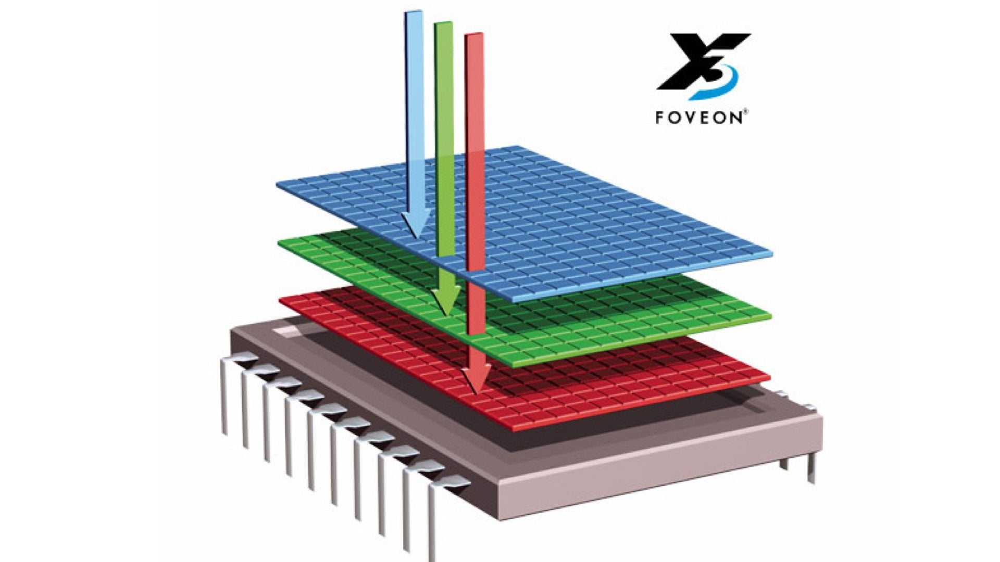
Pixel Shift
Серия кадров со сдвигом матрицы на долю пикселя. На каждой позиции под другим цветным фильтром оказывается тот же участок изображения; после совмещения получают более полное цветовое и/или пространственное разрешение без (или с меньшей) интерполяцией мозаики.
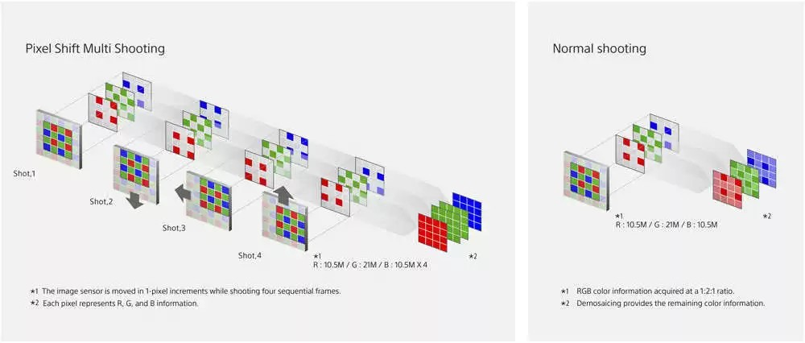
Фильтр Байера
Мозаика цветных светофильтров над фотодиодами: 50 % зелёных, 25 % красных, 25 % синих. Полноцветное значение в каждом узле восстанавливается интерполяцией (демозаика).
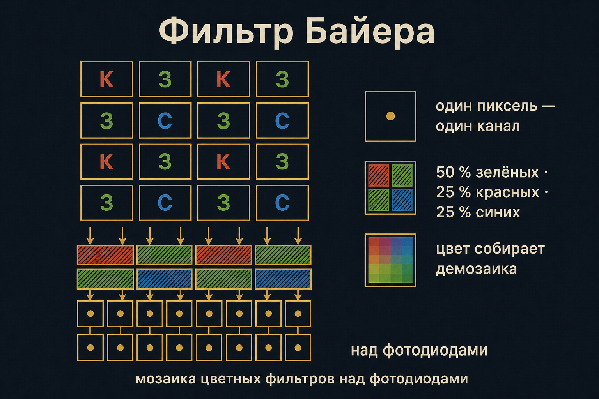
Демозаика
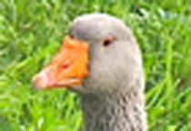
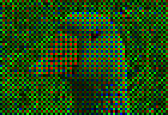
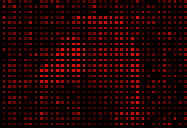
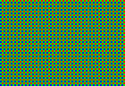
Оценка недостающих каналов по соседним отсчётам; повышение резкости контуров.
Физический размер матрицы
Линейные размеры светочувствительной области (ширина × высота) в миллиметрах.
Определяет площадь пикселя при заданном числе элементов, отношение сигнал/шум, ГРИП и угол поля при той же оптике. На практике размер указывают по диагонали или через кроп-фактор относительно кадра 24×36 мм.
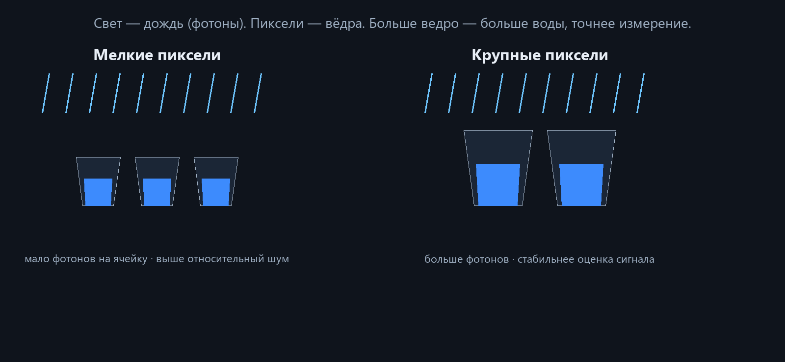
Стандартные размеры матриц
В обозначениях вида 1″, 1/2,3″ «дюйм» условен: примерно 16 мм диагонали на единицу обозначения, это не длина по линейке.
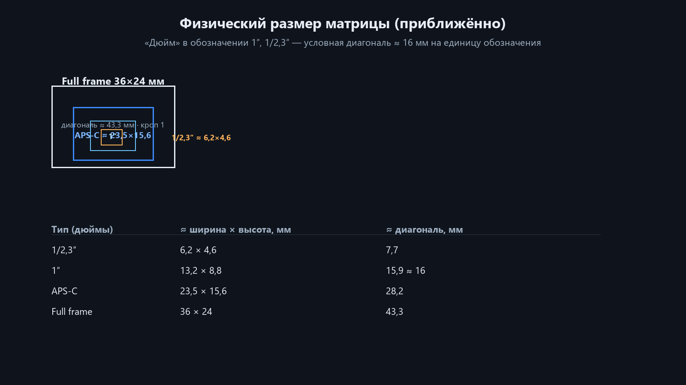
Кроп-фактор
Kf = d24×36 / dфактотношение диагоналей; d24×36 ≈ 43,27 мм
При подобных пропорциях кадра то же отношение даёт отношение соответствующих сторон: Kf = a24×36 / aфакт. Отношение площадей равно квадрату кроп-фактора: S24×36 / Sфакт = Kf².
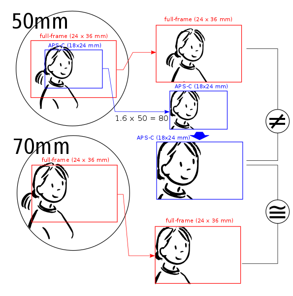
Оптическое разрешение матрицы
Способность оптического прибора воспроизводить изображение близко расположенных объектов.
Линейное разрешение — минимальное расстояние между различимыми объектами.
На практике матрицу характеризуют:
- размером в пикселях по горизонтали и по вертикали;
- общим количеством пикселей.
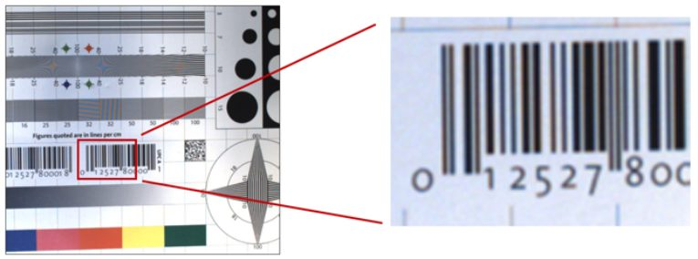
Шумы
- Темновой ток — термоэмиссия носителей в потенциальную яму без света
- Тепловой шум — флуктуации носителей заряда
- Структурный / случайный / линейчатый
Отношение сигнал/шум (SNR) — фототок к темновому. Больше площадь пикселя — выше SNR при той же освещённости.
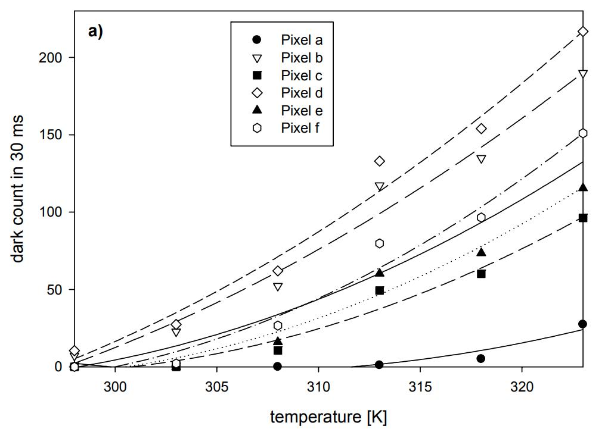
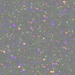
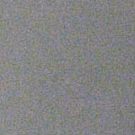
Чувствительность матрицы и ISO
Квантовая эффективность — отношение числа электронов к числу упавших фотонов. Порог чувствительности — уровень, при котором фототок ещё превышает темновой.
ISO в цифровой камере — передаточная характеристика «матрица + усилитель + АЦП». Верхний предел собственной чувствительности задаёт размер пикселя; дальнейшее повышение ISO — усиление сигнала.
Экспозиционный индекс EI
Числа файла сопоставимы с плёнкой той же ISO при тех же относительном отверстии и выдержке. К параметрам кремния относится косвенно.
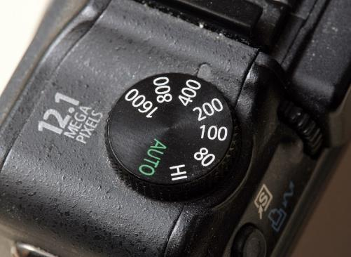
Динамический диапазон
Способность воспроизводить различия яркостей с одинаковой степенью контраста. В ступенях экспозиции (EV): от шума в тенях до насыщения ячейки в светах. Глаз ≈ 14 EV, современные камеры примерно 6–15 EV.
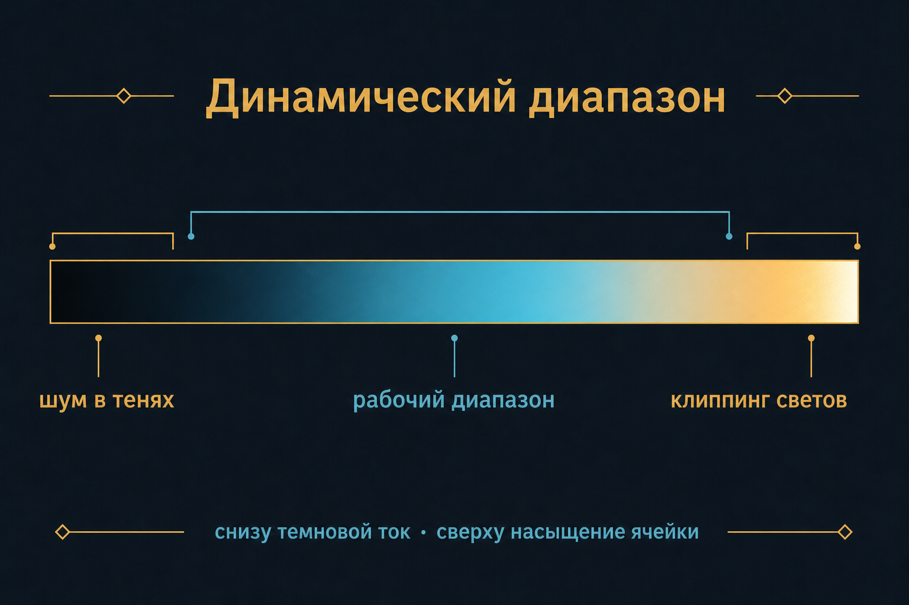
Глубина цвета
Число различимых полутонов на канал — разрядность АЦП. 8 бит × 3 = 24 бита ≈ 16,7 млн цветов.
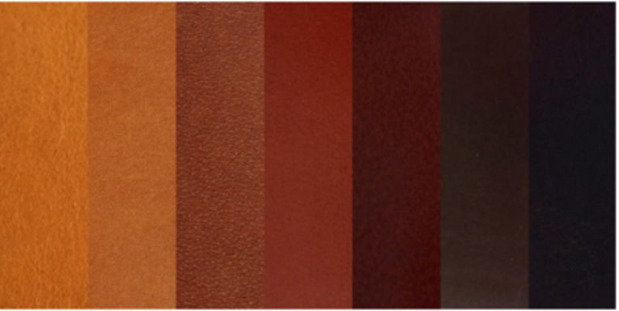
Цветопередача
Две камеры на одну сцену дают разные RGB даже при одном балансе белого. Охват камеры меньше охвата глаза; охват печати — меньше охвата камеры и монитора.
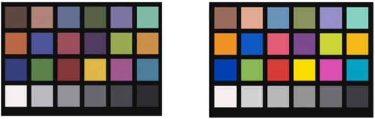
Процессор и АЦП
- фокусировка · АЦП · формирование файла и сжатие · запись
- дискретизация · квантование · кодирование
Экспозиция
Количество излучения на приёмнике. Для видимого света:
H = E · tосвещённость × выдержка · люкс-секунда

Нормально экспонированное изображение
Согласованное сочетание теней, светов и средних тонов; детали не потеряны из-за насыщения или недодержки. Для измерительных задач дополнительно: наилучшее пространственное разрешение по полю кадра.
1 стоп = ×2 по светуудвоение или уполовинивание H на матрице
Треугольник экспозиции
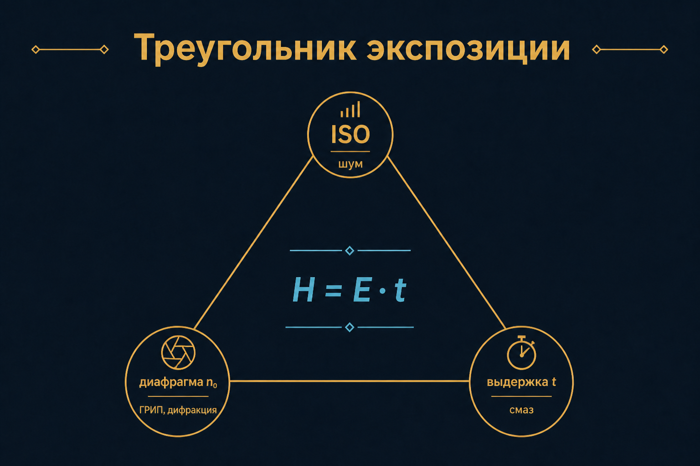
Экспонометр
Измеряет свет и выдаёт экспопару (выдержка t и относительное отверстие).
- ручной — падающий на объект
- встроенный — отражённый от объекта
Режимы: матричный · центровзвешенный (~70 % центра) · точечный (2–8 %). Сравнение с 18 %-й серой картой.
Режимы съёмки
- Auto · P · A/Av · S/Tv · M · B
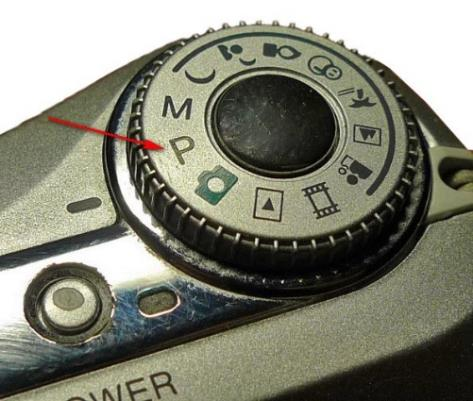
Вопросы
- Пять операций сенсора?
- Почему ISO не тождественна чувствительности кремния?
- Зачем в фильтре Байера два зелёных элемента из четырёх?
- Чем насыщение (клиппинг) отличается от шума в тенях?
- Падающий и отражённый замер — в чём различие?